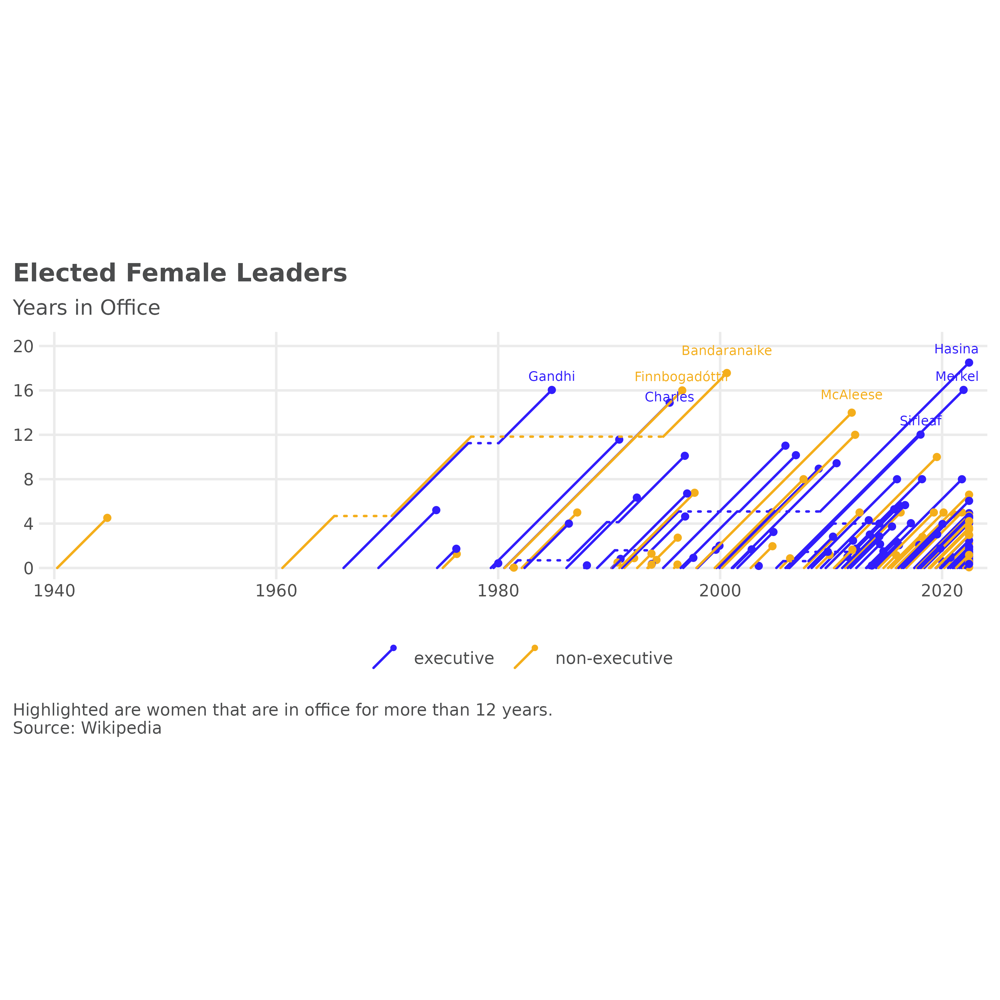

This vignette shows use cases for the data sets included in the ggpointless package:
-
co2_ml: CO2 records taken at Mauna Loa, Hawaii -
covid_vac: COVID-19 Cases and Deaths by Vaccination Status -
female_leaders: Elected and appointed female heads of state and government
Setup
text_size <- 2.5
text_color <- "#4b4c4d"
theme_set(theme_minimal() +
theme(plot.caption = element_text(hjust = 0)) +
theme(plot.caption.position = "plot") +
theme(text = element_text(size = 9, color = text_color)) +
theme(axis.ticks.length.x = unit(0, "mm")) +
theme(axis.ticks.length.y = unit(0, "mm")) +
# https://stackoverflow.com/a/17312440/8583393
theme(axis.title = element_text(size = text_size * 1 / 0.352777778)) +
theme(axis.title.x = element_text(hjust = 1)) +
theme(axis.title.y = element_text(hjust = 1, angle = 0)) +
theme(panel.grid.minor = element_blank()) +
theme(legend.position = "none") +
theme(plot.title = element_text(face = "bold")) +
theme(plot.title.position = "plot"))Carbon Dioxide Concentration in the Atmosphere
We’ll start to recreate Gregor Aisch’s plot of carbon dioxide concentration over time.
data(co2_ml)co2_ml is a data.frame of monthly CO2 measurements from March 1958 to January 2022, taken at Mauna Loa, Hawaii . In order to plot a line for each decade on a common scale, we first need to add one additional variable to co2_ml that we’ll call date_scale.
Also, we create a helper function to change the date labels of the x-axis.
axis_labeller <- function(date) {
year <- as.integer(format(date, "%Y"))
tmp <- year - min(year, na.rm = TRUE)
replace(tmp, !tmp, "")
}See full code
# layers
p1 <- ggplot(co2_ml, aes(date_scale, co2_ppm, color = decade))
# sustainable level
p1 <- p1 + geom_hline(aes(yintercept = 350),
color = "#dbd9db",
size = 1
)
p1 <- p1 + geom_text(aes(x = as.Date("1951-01-01"), y = 348),
label = "sustainable level",
size = text_size + .3,
color = "#dbd9db",
hjust = "left",
inherit.aes = FALSE
)
p1 <- p1 + geom_line()
p1 <- p1 + geom_pointless(location = c("first", "last"), size = 2)
# label decades
p1 <- p1 + geom_text(
data = subset(co2_ml, subset = decade != "2020's"),
aes(label = decade),
size = text_size,
stat = "pointless",
location = "last",
hjust = "left",
nudge_x = 40
)
# label at first year in decade
p1 <- p1 + geom_text(
data = subset(co2_ml, subset = decade != "1950's"),
aes(label = year, group = decade),
size = text_size,
color = text_color,
stat = "pointless",
location = "first",
vjust = "top",
hjust = "left",
nudge_y = -2
)
# label at last year in decade
p1 <- p1 + geom_text(
data = subset(co2_ml, subset = !(decade %in% c("1950's", "2020's"))),
aes(label = year, group = decade),
size = text_size,
color = text_color,
stat = "pointless",
location = "maximum",
vjust = "bottom",
nudge_y = 1
)
# label the years 2014 to 2018 in the format '%y
p1 <- p1 + lapply(2014:2018, function(yrs) {
geom_text(
data = subset(co2_ml, subset = year == yrs),
aes(label = sprintf("'%i", year %% 100), group = year),
size = text_size,
color = text_color,
stat = "pointless",
location = "maximum",
vjust = "bottom",
nudge_y = 1
)
})
# highlight all-time maximum
p1 <- p1 + geom_pointless(
data = subset(co2_ml, subset = decade == "2020's"),
location = "maximum",
size = 8,
shape = 21,
fill = NA,
stroke = .9
)
# label all-time maximum
p1 <- p1 + ggtext::geom_richtext(
aes(
x = date_scale + 500,
y = co2_ppm - 3,
group = NULL,
label = sprintf("**%g ppm**<br>%s %s", round(co2_ppm), month.name[month], year)
),
stat = "pointless",
location = "maximum",
size = text_size,
color = text_color,
fill = NA,
label.color = NA
)
# draw curve from all-time maximum to its label
p1 <- p1 + geom_curve(
data = subset(co2_ml, subset = decade == "2020's"),
aes(
x = date_scale + 90,
xend = date_scale + 500,
y = co2_ppm + 2,
yend = co2_ppm + 2
),
stat = "pointless",
location = "maximum",
curvature = -.4,
size = .35,
color = text_color,
inherit.aes = FALSE
)
# scales
p1 <- p1 + scale_x_date(
breaks = as.Date(sprintf("%i-01-01", c(1950:1960))),
labels = axis_labeller,
expand = expansion(mult = c(0.01, -.03)),
limits = as.Date(sprintf("%i-01-01", c(1950, 1961)))
)
# colors
p1 <- p1 + scale_color_manual(
values = c(
"#f4ae1b",
"#e99950",
"#dc8471",
"#cc708f",
"#b85baa",
"#9f46c6",
"#7a31e1",
"#311dfc"
)
)
# title, subtitle, caption
p1 <- p1 +
labs(
title = "Carbon Dioxide Concentration in the Atmosphere",
subtitle = "Each line represents one decade, from 1958 to 2022. CO2 concentration is measured in\nparts per million* (ppm).",
caption = "*The mole fraction of CO2, expressed as parts per million (ppm) is the number of molecules of CO2 in every million\nmolecules of dried air (water vapor removed). The 'sustainable level' of 350ppm, equivalent to the 1990 levels, has\nbeen identified by UN climate scientists.\nSource: National Oceanic & Atmospheric Adm. (NOAA)",
x = "Years into decade",
y = "ppm"
)Rates of COVID-19 Cases and Deaths by Vaccination Status
The following two charts show age-adjusted daily cases and death rates for vaccinated and unvaccinated people in 26 states in the USA. This example is inspired by a graphic from the New York Times Coronavirus Map and Cases.
data(covid_vac)Again, we create a helper function, this time to change the facet labels:
covid_labeller <- function(label) {
sprintf("Average daily %ss", label)
}See full code
# layers
p2 <- ggplot(
covid_vac,
aes(
x = date,
y = incidence / 7,
color = interaction(outcome, status)
)
)
p2 <- p2 + geom_step(size = .65, direction = "vh")
p2 <- p2 + geom_text(
aes(label = status),
stat = "pointless",
location = "last",
size = text_size,
nudge_x = 5,
hjust = "left"
) +
geom_pointless(size = 3)
# facets
p2 <- p2 + facet_wrap(
vars(outcome),
ncol = 1,
scales = "free_y",
labeller = as_labeller(covid_labeller)
)
# scales
p2 <- p2 + scale_x_date(expand = expansion(mult = c(0, 0.2)))
p2 <- p2 + scale_y_continuous(n.breaks = 4)
p2 <- p2 + scale_color_manual(
values = c(
"case.unvaccinated" = "#050038",
"case.fully vaccinated" = "#9187f7",
"death.unvaccinated" = "#f14e1c",
"death.fully vaccinated" = "#f8a187"
)
)
# title, subtitle, caption
p2 <- p2 +
labs(
title = "Rates for vaccinated and unvaccinated",
subtitle = "Per 100,000",
x = NULL,
y = NULL,
caption = "Source: Centers for Disease Control and Prevention\nRates of COVID-19 Cases and Deaths by Vaccination Status, Apr 2021 to Dec 2021."
)
# theme
p2 <- p2 + theme(panel.grid.major.x = element_blank())
p2 <- p2 + theme(strip.text = element_text(hjust = 0, face = "bold"))Female leaders of independent states
The data used here comes from the Wikipedia article List of elected and appointed female heads of state and government and is collected in the dataset female_leaders.
Before we plot, we want to answer the question: which women are in office for more than 12 years?
# Sirimavo Bandaranaike was both in executive and non-executive position
# setting power to last observation by person
female_leaders <- merge(
female_leaders[, c("name", "startdate", "enddate", "country"), ],
aggregate(. ~ name, female_leaders, tail, 1)[, c("name", "country", "power")],
all.x = TRUE
)
tmp <- aggregate(
days_in_office ~ name,
transform(female_leaders, days_in_office = enddate - startdate),
sum
)
# 365.25 is an approximation of course
tmp <- subset(tmp, days_in_office / 365.25 > 12)
leaders_12 <- merge(tmp, female_leaders, by = "name")
leaders_12 <- leaders_12[order(leaders_12$name, leaders_12$enddate), ]
leaders_12 <- aggregate(. ~ name, leaders_12, tail, 1)
# aggregate() returns dates as characters
leaders_12 <- type.convert(leaders_12, as.is = TRUE)
leaders_12$familyName <- vapply(
X = strsplit(leaders_12$name, split = " "),
FUN = function(name) name[length(name)],
FUN.VALUE = character(1)
)The inspiration to add geom_lexis() came again from Gregor Aisch. This time from his post on Three decades of European government leaders. Let’s see how close we can get with our example data to the original plot.
See full code
p3 <- ggplot(
female_leaders,
aes(
x = startdate,
xend = enddate,
group = name,
color = power
)
)
p3 <- p3 + geom_lexis(
aes(linetype = after_stat(type)),
point_size = 1
)
# coord
p3 <- p3 + coord_equal()
# scales
p3 <- p3 + scale_x_date(expand = c(.02, .05))
p3 <- p3 + scale_y_continuous(
limits = c(0, 7400),
breaks = c(0, 4, 8, 12, 16, 20) * 365.25,
labels = function(i) floor(i / 365.25))
p3 <- p3 + scale_color_manual(values = c(
"executive" = "#311dfc",
"non-executive" = "#f4ae1b"
))
p3 <- p3 + scale_linetype_identity()
# title, subtitle, caption
p3 <- p3 + labs(
title = "Elected Female Leaders",
subtitle = "Years in Office",
caption = "Highlighted are women that are in office for more than 12 years.\nSource: Wikipedia",
x = NULL,
y = NULL,
color = NULL
)
p3 <- p3 + theme(legend.position = "bottom")
# annotations
p3 <- p3 +
geom_text_repel(
data = leaders_12, aes(
x = as.Date(enddate, origin = "1970-01-01"),
y = days_in_office,
colour = power,
label = familyName
),
size = 2,
direction = "y",
nudge_y = 10,
inherit.aes = FALSE,
show.legend = FALSE)